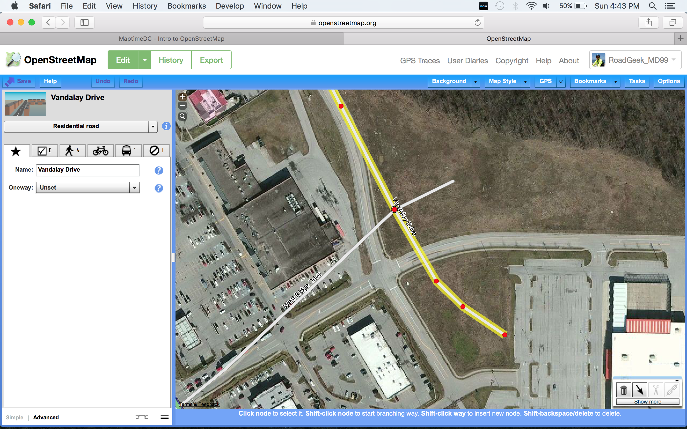
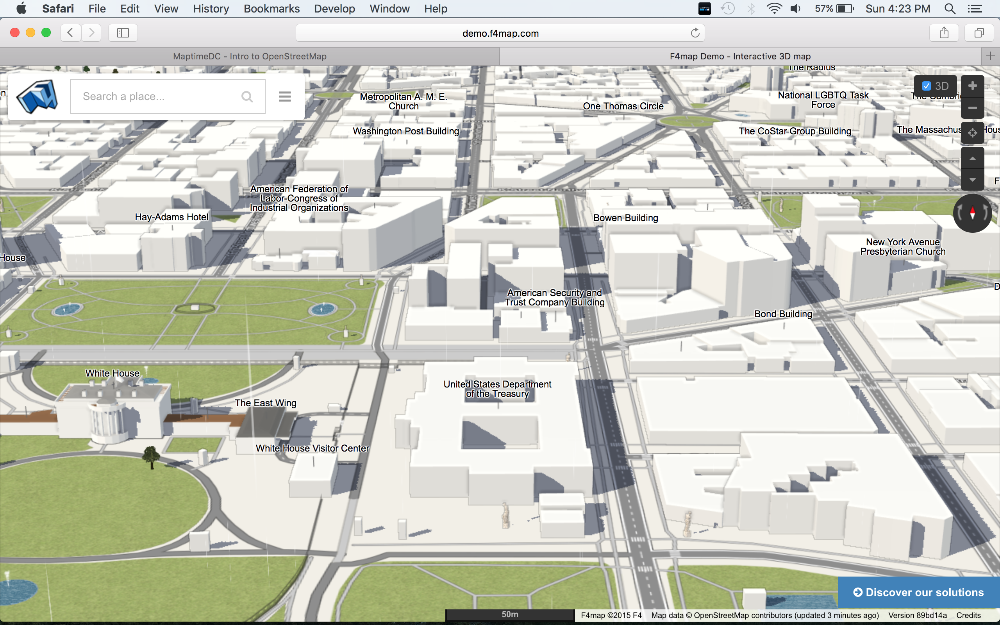

Maptime DC - Intro to OpenStreetMap
Introduction
What is OpenStreetMap (OSM)? OpenStreetMap has been called the "Wikipedia of maps" (not actually a part of Wikipedia).
Why OpenStreetMap? Most maps aren't free! Maps by Google, the government and others can be expensive to license and restrictive to use. In some countries, you must have a license to use any map of their country and submit your map for approval before you can publish it.
So like Wikipedia, why can't we make a map ourselves?
OSM is an 11 year old Internet project to create a map of the world. It is free for anyone to use and was built by (mostly) volunteers using GPS, air photos and open-source software. It has functions for rendering, routing and geocoding, just like other commercial maps. Since OSM is easy to use with very few restrictions, many creative uses have occurred, including such varied applications as smart phone navigation, exercise trackers, 3d modeling and disaster relief. OSM has commercial, government, NGO, personal, academic, and hobbyist users all over the world.
Sample maps
Regular rendering (drawing)
Cycle

Transport
MapQuest Open
Humanitarian
Core Data Elements / Geographic Objects
- Node - A point in space with latitude, longitude (Y, X) and a node ID. Used to model stand-alone point features (Points of Interest), or the shape of a way.
- Way - An ordered list of nodes which makes a line. Used for roads, railways, streams, walls, etc. Limit: 2,000 nodes in a way.
- Closed Way - A way that ends where it began, used to model simple areas (polygons) like a building or a lake. Or it can just be a road that loops back on itself.
- Tag - A key and value pair, used to describe an element. A key describes a broad class of features (e.g. highway, building, railway) while a value details the specific feature that was generally classified by the key (e.g. highway=motorway). Many elements have multiple tags to give information about them. For example: name="G Street Northwest", highway=tertiary, lanes=2 and cycleway=lane.
- Relation - A linkage to group logical or geographic relationships between other elements, having tags to describe this relationship. Examples: polygons with holes, highway and bus routes, and turn restrictions.
When I grow up, I want to be a closed way?
A node can represent a amenity=fast_food restaurant. But you could go back and make a way around your node and tag that way with building=yes, name=Wade's, amenity=fast_food, cuisine=burger. But suppose the building has a hole in the center? You could then convert your building to a relation, where the relation has the tags, and the ways represent the outer and inner edge of the building.
Unlike some GIS systems, every geometry (nodes and ways) can be shared.
For example, a node can join a road (way) and railway (way) and that node should be tagged as railway=level_crossing. There aren't separate themes of points, lines and polygons.
Beginners Guide & Help
TIGER & Imports
TIGER is the US Census Bureau's map. As Federal data, it is in the Public Domain and was imported in 2007 to form the basis of the USA. It is bad in many areas (poor shape, no one-ways, bridges and tunnels not modeled) and while the major US cities have been cleaned up, many smaller cities and rural areas are untouched.

Imports:
- They are hard to do! But if you want to try...
- Read the import guidelines and prepare some sample data.
- E-mail your proposal to the imports mailing lists.
- Respond to questions and adjust plan as needed.
- Do the import.
- Run Quality Assurance.
Automated edits are similar, but even less popular. If not discussed and agreed upon, your edits will be reverted (removed).
Editors
OpenStreetMap has multiple editors. Most popular for your laptop...
ID
Best starter editor. Friendly, in-browser and existing data is downloaded automatically as you move.

Potlatch 2
Old starter editor. Not as easy as ID, needs Flash but more features.
JOSM
JOSM = Java OpenStreetMap editor. Most complicated and some would say the best editor. It (and Java) needs to be installed.
OSM for your smart phone...
OsmAnd for Android/ iOS: edits POIs and submits GPS tracks
Pushpin OSM iOS POI editor
Go Map!! iOS map editor for POIs and ways
A few hints, warnings and common mistakes
Do this
- Map what is on the ground and what you can see. One exception is political boundaries.
- OSM uses British English, so some terms may be different. The Wiki is your friend.
- A name tag should be a true name, and not describe the object. Example: name=Water Tower is wrong, but man_made=water_tower is correct.
- Map facts, not opinions.
- Connect a road (way) at the intersection of another road with a node.
- Read, ask questions, look at how others have mapped.
- No real central authority, more a democracy/meritocracy, so some standards and tags may seem odd. Tags can be invented, typo-ed or become obsolete.
- Add good change set comments. What did you do? What is your source? NO: "Added some things". YES: Added buildings from imagery. New roads from GPS trace. Addresses from survey. Or even more details.
- Square the corners of your buildings.
- Have fun!
Don'ts
- Don't copy from Google (Maps/StreetView) or any other copyrighted (c) source. Mapillary is allowed.
- Connect a bridge to the road under it.
- Add a one-way to a road without checking that the whole road is one way.
- Add a node (amenity=bank) into a building that is already tagged (as amenity=bank). That would duplicate effort.
Hints
- For street names, spell them out, like "Saint Joe Street", not "St Joe St". Computers can abbreviate, but they aren't as good at expanded abbreviations. Think about a navigation system saying "Left on Street Joe Saint".
- Tags in lower case. Names in Mixed Case. Some exceptions.
- Imagery and even GPS tracks can be off. Don't move someone's work without looking at their edit history and/or contacting them.
- Save your changes frequently.
- The main map can show your changes some times in under 5 minutes. (Refresh your browser.) Some projects only refresh their views daily or weekly.
- If a building is leaning, map the roof, but drag it over the ground level.
- Long straight ways (railway and roads) may not show up until there is a node. You may have to zoom around to get the data.
- Undo is your friend.
- Beware of new roads on old imagery. If I trace a realigned road with GPS, Bing may not catch up for another year. So don't "fix" it by dragging it back.
- Happy Mapping!
Is it a map or a database?
Both! It is a database, so if you and I add the same building at the same time, we get duplicates. If we edit the same thing at the same time, the first one to check in wins. Save often!
Projects
Humanitarian OpenStreetMap Team (HOT) and Missing maps for disaster response and humanitarian work.

Tag your building with building:levels=#.

MapRoulette
Notes
A Note is a quick way to point out a problem or missing map data. If you're logged in, it is tagged with your ID. Notes are not authoritative, so use them as guidance to fix things.
Another way to note a problem is the fixme tag. (Alternate forms are FIXME or older TODO tags.)
Exporting data
QGIS has both Vector->OpenStreetMap->Download Data and OpenLayers Plug-in with OpenStreetMap
Overpass queries
Overpass can be used for both export (geoJSON!) and Quality Assurance

Quality Assurance
Geofabrik's OpenStreetMap Inspector
Sign up
If you don't already have an account, visit the sign up page and create one.
You're ready to map!
Questions?
Mini Mapathon!
Navigate to an area you like and/or pick a project from above.
Click on Edit with ID...
The end.